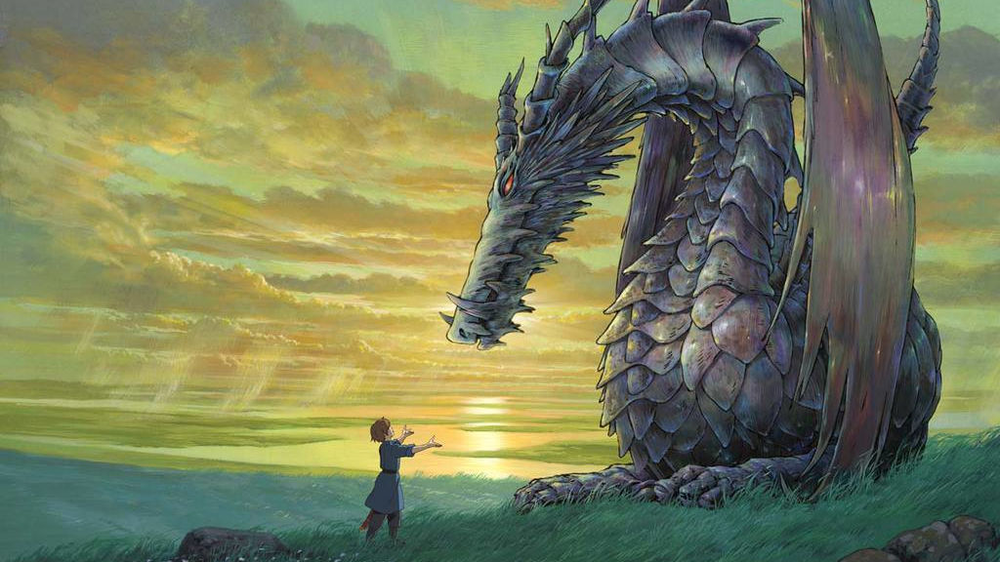
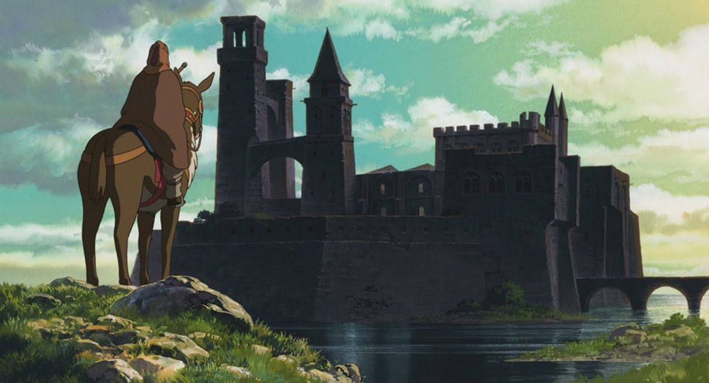

Nada de lo que sucede se olvida.
Nada de lo que sucede se olvida.
Cuentos de Terramar
Sinopsis
Algo extraño y tenebros se cierne sobre el reino de Terramar. Lo último es la visita de dragones provenientes de tierras lejanas, el mundo de los dragones y el de los humanos no debe tocarse. Al producirse este fenómeno; Gavilán, uno de los archimagos más poderosos del mundo, decide investigar que sucede. En su viaje conoce a Arren, un joven príncipe víctima de sus fantasmas del pasado al que le atormenta un lado oscuro que, en los momentos más críticos, le confiere poder a la vez que odio y crueldad. Ese poder lo utilizará para proteger a Theru, una joven misteriosa con la que se encuentra en su camino. Sin embargo, de el odio y de la crueldad de Arren se querrá aprovechar Cob, rival de Gavilán y uno de los magos oscuros más poderosos del reino.

Las producciones de Studio Ghibli siempre se han apoyado en temas universales como representación de sus valores y ecosistemas narrativos. La naturaleza y el choque contra la invasión del ser humano es una parte fundamental de 'El castillo en el cielo', mientras que la tradicionalidad y el modernismo ejercen de ejes opuestos en la discusión sobre sueños y madurez que supone el viaje en 'Nicky la aprendiz de bruja'.

'Cuentos de Terramar' no es una excepción, pero si un punto controvertido dentro del largo historial del estudio. Y es que el universo en el que se fija, el creado por Ursula K. Le Guin, ya cuenta con sus propias leyes y mensajes. Puntos que se sobrescriben, bajo la mirada de un especialmente novel director, Goro Miyazaki, que vería sus influencias —en este caso, mezcla de la citada autora y su propio padre en su figura como director y maestro— como puente en una obra que pierde el rumbo con facilidad pero que se apoya en una mística constante que, incluso familiar, da forma a su trasfondo.